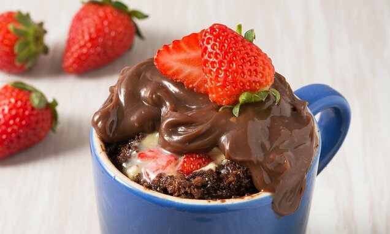

Bolo de caneca

Simplesmente o melhor bolo que você já comeu!!!
Detalhes da receita
- Rende 1 porção
- Tempo de preparo: 1 minuto e 10 segundos
- Dificuldade: Muito fácil
Ingredientes
- Envelope de Dr. Oetcker
- 50 ml de leite
Modo de preparo:
- Colocar conteúdo do envelope em uma xícara
- Colocar 50 de leite
- Mexer até a massar ficar homogênea
- Colocar no microondas por 1.10 minutos
- Comer!